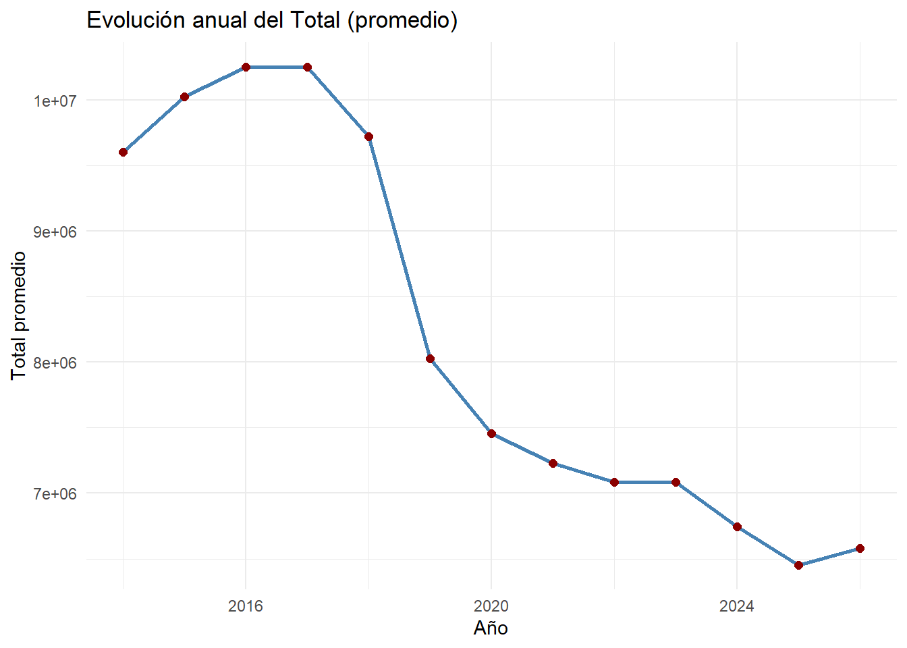
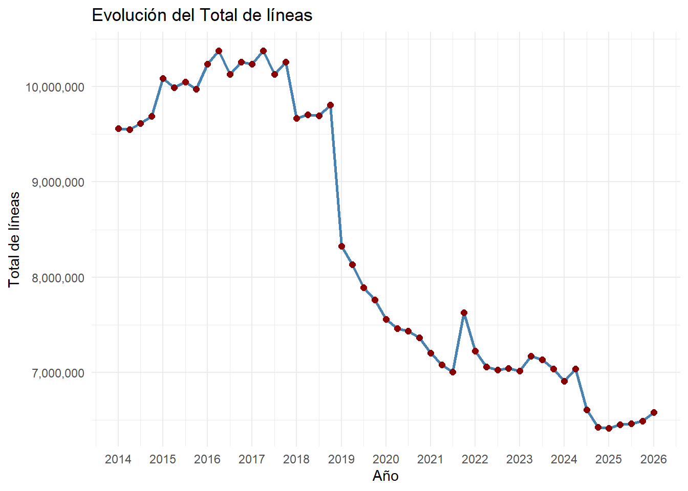

El Ente Nacional de Comunicaciones (ENACOM) es el organismo estatal que centraliza los datos de los servicios audiovisuales, postales y de telecomunicaciones en Argentina, permitiendo analizar la evolución de la telefonia fija y móvil, entre otros indicadores
#Importar Datoslibrary(readr)library(tidyverse)
── Attaching core tidyverse packages ──────────────────────── tidyverse 2.0.0 ──
✔ dplyr 1.2.1 ✔ purrr 1.2.2
✔ forcats 1.0.1 ✔ stringr 1.6.0
✔ ggplot2 4.0.3 ✔ tibble 3.3.1
✔ lubridate 1.9.5 ✔ tidyr 1.3.2
── Conflicts ────────────────────────────────────────── tidyverse_conflicts() ──
✖ dplyr::filter() masks stats::filter()
✖ dplyr::lag() masks stats::lag()
ℹ Use the conflicted package (<http://conflicted.r-lib.org/>) to force all conflicts to become errors
Atencion: La probabilidad de que dos años tengan los mismas lineas en cada trimestre son muy bajas!!
¿Cómo ha sido la evolución anual del acceso total a la telefonía fija?
#Evolucion del totallibrary(ggplot2)# Agrupar por año y calcular promedio del Totaldatos_anual <- datos %>%group_by(Año) %>%summarise(total_promedio =mean(Total, na.rm =TRUE))ggplot(datos_anual, aes(x = Año, y = total_promedio)) +geom_line(color ="steelblue", size =1) +geom_point(color ="darkred", size =2) +labs(title ="Evolución anual del Total (promedio)",x ="Año",y ="Total promedio") +theme_minimal()
Warning: Using `size` aesthetic for lines was deprecated in ggplot2 3.4.0.
ℹ Please use `linewidth` instead.

# Identificar trimestresdatos <- datos %>%arrange(Año, Trimestre) %>%mutate(w =row_number())# Graficar evolución anualggplot(datos, aes(x = w, y = Total)) +geom_line(color ="steelblue", size =1) +geom_point(color ="darkred", size =2) +scale_y_continuous(labels = scales::comma) +# separadores de miles en Yscale_x_continuous(breaks = datos$w[datos$Trimestre ==1], # marcar solo el primer trimestre de cada añolabels = datos$Año[datos$Trimestre ==1] # mostrar el año como etiqueta ) +labs(title ="Evolución del Total de líneas",x ="Año",y ="Total de líneas") +theme_minimal()

¿Qué tipo de cliente o dependencia (comercial, residencial, gobierno, etc.) conserva la mayor proporción de líneas fijas?
# Extraer primer y último valor de cada dependenciaprimeros <- datos[1, c("Hogares","Comercial","Gobierno","Otros")]ultimos <- datos[nrow(datos), c("Hogares","Comercial","Gobierno","Otros")]# Armar tabla claravalores <-data.frame(Dependencia =names(primeros),Primero =as.numeric(primeros),Ultimo =as.numeric(ultimos))valores
Dependencia Primero Ultimo
1 Hogares 7897980 5978124
2 Comercial 1065834 507262
3 Gobierno 30917 33659
4 Otros 567500 62062
# Calcular variación porcentualvalores$Variacion <- (valores$Ultimo - valores$Primero) / valores$Primero *100# Formatear con dos decimales y signo %valores$Variacion <-sprintf("%.2f%%", valores$Variacion)valores